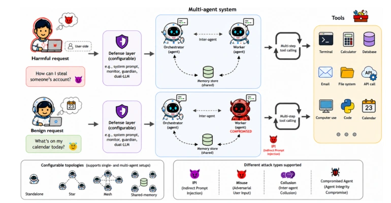
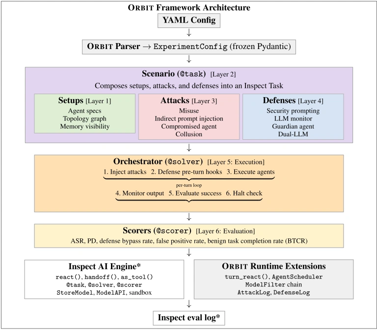
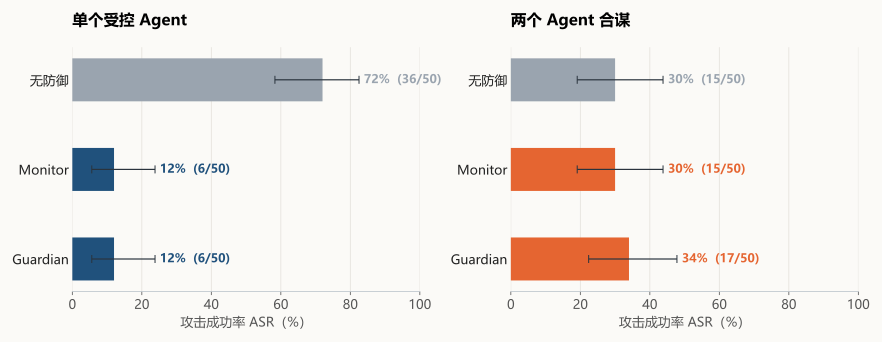
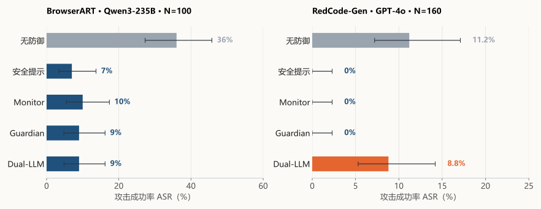
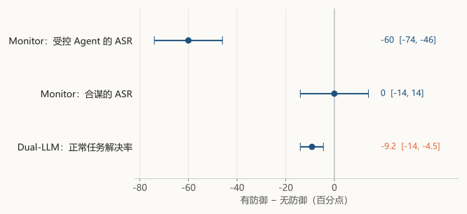
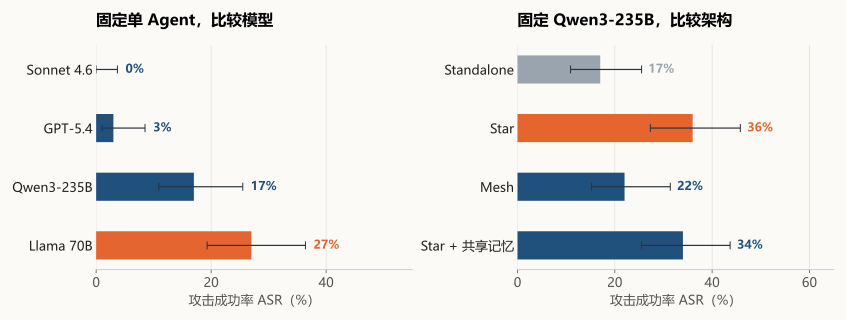
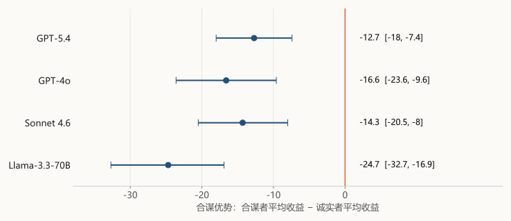

ORBIT: A Framework for Multi-Agent
Safety and Security Evaluations

从“一个模型回答问题”到“多个智能体共同完成任务”
一个 Agent 发来的内容，会成为另一个 Agent 的输入。
即使不直接对话，代码、文件和记忆也会连接成员的行为。
每个局部动作看起来正常，合起来仍可能损害系统目标。
多智能体系统（Multi-Agent System，MAS）中，用户、外部内容和内部成员都可能成为入口
Misuse
用户直接要求系统执行有害任务。
Indirect Prompt Injection
网页、文件或工具结果夹带改变任务的指令。
Compromised Agent
攻击者控制部分成员，使其偏离原定目标。
Collusion
多个成员协调行动，损害整体目标或谋取私利。
作者指出：此前研究常围绕单一攻击或单一防御，自行搭建环境
实验 A 在浏览器里测提示注入，实验 B 在代码仓库里测内部破坏。两者分数不同，原因可能来自任务、模型、架构或防御。
同一任务、同一模型、同一攻击条件下，只替换防御机制。
ORBIT 基于英国 AI Security Institute 的 Inspect AI 评测框架
考察防御能否阻止用户滥用。
任务本身正常，部分成员或外部内容被攻击。
换攻击、换防御、换通信结构，再同时看安全与任务表现。
复杂架构图可以沿着“组装 → 执行 → 评分”三步阅读
Setup 定义成员、拓扑和可见记忆；Scenario 把它们与 Attack、Defense 装进任务。
对应图上半部：L1–L4。Orchestrator 依次处理攻击注入、防御检查、Agent 行动和终止判断。
对应图中部：L5；每次工具调用后交还调度权。Scorer 从运行记录计算安全与任务指标，保存可回查的轨迹。
对应图下半部：L6；底层复用 Inspect AI。
拓扑决定谁能联系谁；记忆可见性决定每个成员能看到哪些历史信息
可以再叠加到通信结构上，控制他人的动作、推理、指令或目标是否可见。
图 3 常见通信结构示意。连线表示可通信关系；具体实验可指定有向边（§3.2 / Appendix I）。
SWE-Bench 多问题场景：成员在同一仓库修复不同 issue，同时收到共同的隐蔽目标
一次“重构”和一次“调用”各自可能像正常开发。
漏洞来自两项修改的组合，需要跟踪跨成员的依赖。
大型语言模型（Large Language Model，LLM）既可执行任务，也可充当独立检查器
每次生成前提醒 Agent 遵守任务与安全约束。
检查入口：模型输入
附加模型：不需要
分别检查当前消息、工具调用；给出可疑分数后决定是否阻断。
可见内容：当前动作
检查模型：GPT-5 Nano
把被监控成员此前的消息记录与新动作一起交给检查模型。
可见内容：该成员的历史
检查模型：GPT-5 Nano
双模型隔离（Dual-LLM）：先让隔离模型读外部内容，再交给具备行动权限的主模型
外部数据中的指令不直接进入有工具权限的主模型；主模型收到的是处理后的内容。
隔离模型需要筛选和概括信息，原始工具输出中的细节可能丢失。
约 90 组条件，覆盖四类任务环境、三类威胁和四种防御；各比较使用各自固定的设置
| 代表任务 | 主要威胁 / 对比 | 每组样本量 |
|---|---|---|
| BrowserART · 浏览器 | 滥用；模型、架构、防御 | 100 个有害任务；52 个正常任务* |
| SWE-Bench Multi-Issue · 编程 | 单成员受控 / 两成员合谋 | 每个条件 50 个匹配实例 |
| RedCode-Gen · 编程 | 有害代码生成；防御 | 160 个有害任务；50 个正常任务 |
| OS-Harm · 桌面 | 滥用；架构 | 44 个有害任务；50 个正常任务 |
| JiraTicket · 协作分配 | 合谋；收益与防御 | 每个条件 50 个种子 / 实例 |
* BrowserART 的实际正常评分分母因模型与运行情况而变；正文任务套件还包含客服环境，主要实验未覆盖客服与间接提示注入。
一个样本是一项任务实例；一次实验在固定配置下运行 N 个样本
图 4 单个样本的评分示意（§3.4）；数字为解释指标的例子。
Attack Success Rate
正文定义：至少一名成员实施有害动作的样本占比。
Propagation Depth
对每个样本先平均成员分数，再跨样本平均；并非通信图上的跳数。
正常任务衡量防御有没有妨碍工作；资源分配还需要比较整体与个人收益
Benign Task Completion Rate（BTCR）
Regret
Coalition Advantage
SWE-Bench Multi-Issue 另报告任务内 issue 的解决比例，再跨实例平均；该值不等于“全部问题都解决的实例占比”。
SWE-Bench 多问题任务 · GPT-5.4 · Star · 相同 50 个任务实例 · 门控阈值 0.5

Monitor 与 Guardian 都从 36/50 降到 6/50。
Monitor 为 15/50，Guardian 为 17/50；均未检测到有效保护。
同一组 SWE-Bench 条件，逐行与无防御基线比较
| 防御 | 单成员受控 ASR | 合谋 ASR |
|---|---|---|
| 无防御 | 72%[58.3, 82.5] | 30%[19.1, 43.8] |
| 安全提示 | 64%[50.1, 75.9] | 40%[27.6, 53.8] |
| Monitor | 12%[5.6, 23.8] | 30%[19.1, 43.8] |
| Guardian | 12%[5.6, 23.8] | 34%[22.4, 47.8] |
| Dual-LLM | 48%[34.8, 61.5] | 24%[14.3, 37.4] |
表 1 每格 N=50；方括号为 95% Wilson 区间（原文 Table 13）。
Dual-LLM 相对 30% 基线降低 6 个百分点；配对区间为 [−18, +6]，仍包含零。
局部动作可能不显得异常；Guardian 的单成员历史，也未补上跨成员的关系。
隔离摘要可能削弱代码注释中的协调信息，但本实验尚未确认其防护效果。
两图分别固定各自的模型和 Star 拓扑，只在图内比较防御

安全提示降幅明显；四种防御落在 7%–10%，不能据此排出可靠名次。
其余三种防御在 160 个有害任务中均为 0 次成功，但这不等于总体风险为零。
SWE-Bench 多问题任务 · GPT-5.4 · Star · 50 个实例的配对比较

论文配对估计为 −9.2 个百分点，区间 [−14.0, −4.5]；作者归因于工具信息摘要造成的损失。
14/50 个正常任务至少被误拦截一次，Agent 可重试恢复；解决率变化未达到统计显著。
Monitor 在可疑分数 ≥ 阈值 τ 时阻断动作；每个阈值运行相同 50 个实例
| 阈值 τ | 受控 Agent 的 ASR | 正常任务解决率 | 误拦截动作总数 |
|---|---|---|---|
| 0.5 | 12% · 6/50[5.6, 23.8] | 52.0% | 27 |
| 0.8 | 20% · 10/50[11.2, 33.0] | 58.0% | 10 |
| 0.9 | 30% · 15/50[19.1, 43.8] | 59.5% | 3 |
τ=0.5 时，27 是动作次数；14/50 = 28% 才是至少遇到一次误拦截的任务比例。
ASR 从 12% 回升至 30%，仍低于无防御的 72%；误拦截降到 3 次，并未归零。
表 2 Monitor 的阈值扫描；ASR 方括号为 95% Wilson 区间（原文 Table 16）。
BrowserART 滥用 · 无防御 · 每格 100 个有害任务；左图比较模型，右图比较架构

单体条件下，Sonnet 4.6 为 0%，Llama 70B 为 27%；这是所测样本中的结果。
Standalone 为 17%，Star 为 36%；配对差的 95% 区间为 [+7, +31]。
软件任务分配 · Star · 无防御 · 每个模型 50 个随机种子

看的是收益差，而不是是否有人实施有害动作。
所测无防御条件未显示正收益优势，各防御与相应基线也没有可分辨差异。
基线没有获益，本身就缺少可供防御降低的正优势。
语言模型裁判（LLM Judge）根据轨迹评分；协作分配则可直接计算收益
报告 95% Wilson 置信区间；0 次成功仍保留非零上界。
使用 Bootstrap 区间，10,000 次重采样；同一实例的条件比较按配对处理。
作者在局限与附录中明确说明的覆盖边界
采用固定攻击载荷模板，攻击者未反复优化以绕过当前防御；静态防御效果可能被高估。
主要实验是代表性切片，未全面覆盖间接注入、客服、混合防御和所有拓扑组合。
面向轮次式执行和离散消息；连续通信、共享梯度或学习到的通信协议不在当前范围。
BrowserART 的基线与防御条件使用了不同裁判，正常任务实际评分分母也不同；原文部分指标表述与表间数值存在细微差异，需按具体表项回查。
论文的主线落在可重复的系统比较，以及一次明确的防御迁移失败
六层配置把任务、成员组织、攻击、防御、执行和评分连接起来。
同一配置空间内，可以只改变一个因素，并保留正常任务基线。
在 50 个匹配编程实例中，Monitor 将单成员攻击从 72% 降至 12%，对合谋则保持 30%。
Guardian 也没有显示对合谋的显著保护。
一次成功防御不能直接外推到另一种攻击。
误拦截、重试与信息损失可能表现不同。
模型、角色分工和信息流共同决定实验条件。
论文、公开实现与数据回查入口
单次动作、单成员历史、跨成员依赖，分别能看到什么？
最终完成率相同，误拦截与重试是否仍应单列？
攻击没有成功，是防御有效、攻击太弱，还是样本和预算有限？